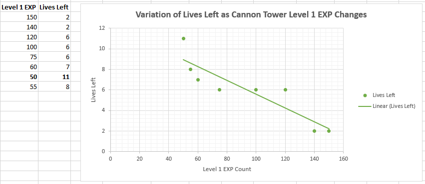
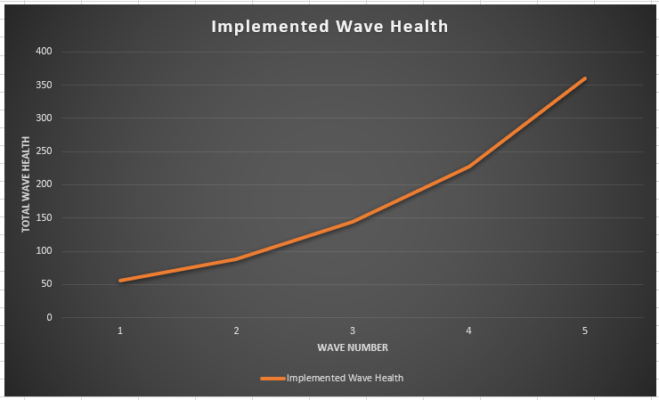

EXISTING LEVEL BALANCING
 After running the framework for the first time, I came up with some basic ideas on how I would want each tower to play. Thinking about how the different types of tower would be perceived by players, I wanted the cannon to do lots of damage but fire at longer intervals, the magic to focus on armour penetration, and the machine to fire quickly but not be able to pierce through armour.
After running the framework for the first time, I came up with some basic ideas on how I would want each tower to play. Thinking about how the different types of tower would be perceived by players, I wanted the cannon to do lots of damage but fire at longer intervals, the magic to focus on armour penetration, and the machine to fire quickly but not be able to pierce through armour.
 After a playtest, I found that the values were too low as the game didn’t get completed before I lost all my lives, so I changed the values and lowered them to try and get a more ‘balanced’ feel to the framework’s progression.
After a playtest, I found that the values were too low as the game didn’t get completed before I lost all my lives, so I changed the values and lowered them to try and get a more ‘balanced’ feel to the framework’s progression.
I spent some time altering the stats to try and have the game be completable, as in its current state the player was running out of lives before all the waves had been defeated.
While trying to balance the stats, I had moved too far into the other direction and made the game too ‘easy’ to complete. I particularly focused on the basic tower, as it felt way too powerful in its current form, easily getting the most kills out of all the towers. I also wanted to buff the cannon tower and magic towers, as I felt they were the least effective of the towers.
After now getting through the framework with all 25 lives, I wanted to do a little bit more balancing of the towers to find a baseline before decreasing all the values to make the simulation ‘harder’.
BASELINE STATS
To get the baseline stats, I adjusted the values to get the level to be ending with around half of the player's lives left.
I felt that 15 lives remaining showed that the difficulty was balanced enough to not be too easy, but still not too hard. Thus, I had obtained my base stats, and moved on to altering the game to end with as few remaining lives as possible.
WINNING WITH AS FEW LIVES AS POSSIBLE
With the first attempt at reducing the stats, I had already lowered the lives remaining to 2. However, after many changes and attempts, I was unable to use the values I had to go lower than 2 lives remaining,
as each change would result in multiple more enemies getting through meaning all the lives are lost and the game ends.
Graphing EXP Change to ~10 Lives
The final part of the task needed each of the tower's level 1 EXP stat to be changed, so that the lives remaining could be as close to 10 as possible.
Basic Tower
The reason the graph has one value above 10 is because I originally moved to 60 first (fitting with the 10 EXP changes), but moved backwards again when I found I had gone over 10 lives remaining.
Magic Tower
In the way the stats were set up, the top path became much more important than the bottom path as that is where the most lives were lost. Also, because the magic tower was the most powerful tower on the top path, I already knew a smaller change would have a greater effect. However, I was not expecting to get such a large jump and hit 10 straight away. Because of this, I went in and got some more values past this to create a better graph that shows more data. In doing this, I found there was seemingly some randomness to how many lives were lost, as I got some variating values. After retesting 140 and still getting 10 lives left, I tested a wide range of different values and presented it using a scatter graph to see the general correlation. Because of the randomness, the other towers will also be plotted with a scatter graph.
Basic Tower Scatter Graph
Cannon Tower
Because the top path had many more lives lost on it, I already knew that the other two towers would have less effect on the lives count, so I had wider variations in the EXP to accommodate this.
Machine Gun Tower
LEVEL DESIGN
Custom Tower and Enemies
The first thing I did was import the base stats I had created for the last task into the engine. Afterwards, I came up with ideas for the two custom towers. The first one is the Sniper Tower, an instant projectile tower that deals a lot of damage and penetration, but has a long fire delay. The second tower was much harder to come up with an idea for; I ultimately decided to go with a ‘Piercer Tower’ one that barely does any damage but quickly penetrates armour.
With the custom enemies, I wanted one of them to be a boss enemy that appears at the end of the final wave. I intend for it to have a lot of health and armour, but also for it to move very slowly across the level. For the other enemy, I came up with the idea of having a fast enemy with a decent amount of health, but having them give lots of EXP if defeated. I dubbed this one the ‘Speedster’.
Level Design
Because part of the design brief was to build a late-game level, I wanted to do some research into how harder levels in tower defence games to get some ideas. Because it is the game I have the most experience in, I decided to use maps from Bloons Tower Defense 5, picking out advanced difficulty tracks to work with. In the game, the harder courses often have shorter and multiple paths, they also tend to give less room to place towers down but the latter does not apply to the framework. Particularly, the track Lightning Scar gave me the idea to have a track that splits into multiple directions. I also want to create an idea by having multiple overlapping paths, which is something a lot of Bloons TD 5 tracks do, such as Rink Revenge. After thinking through potential different designs for my level, the idea I ultimately went with was having two split paths, but with a section that merges the paths together in the middle. I set about making a mockup of the level design in Photoshop, to help demonstrate the idea I was going to be creating.
Path Mockup
Once I had finished this, I set about recreating it in-engine, paying more attention to the way objects are lining up and mirroring them correctly. I also tweaked some of the spline points to make the horizontal lines in the design straight.
After I had implemented it, I ran some of the basic enemies across the track, and felt like it was slightly too large, so I decreased some of the proportions slightly. I played around with the level design some more as I thought it was somewhat basic, but eventually decided to leave it as it is and not needlessly complicate the level.
Enemy Waves
As I was creating the enemy waves, I tried to keep the multiple spawn points in mind for the level, trying to think how I could balance each path to make sure they weren't uneven difficulty-wise.
Wave Difficulty Plan

Individual Wave Plans
Graph of Wave Health

I was quite happy with how the wave designs came out, I felt the initial projections of wave health had a nice difficulty curve to them, and I managed to stick to this plan when coming up with the enemies in each wave while still having the feeling of progression with the stronger enemies being used in the later waves.
Tower Placement
Finally, I worked out where on the level I wanted to place the towers.
After placing preliminary ideas into the level, I realised I would probably need to add more track to the levels, allowing myself to make more space. However, I decided to keep going on with the plan I had set out to see how balanced it felt when I finished it. Now, it became just a case of adding the enemy waves I had already planned out into the wave manager and testing how the game played.
ITERATION 1 VIDEO
Iteration 1 Analysis
When I first launched the game to test it, there were more issues with it than I had thought there might have been.
The first thing I discovered is that if an enemy is in the firing range of two towers at the same time, neither tower will fire at the enemy, so I needed to tweak my level design, but for now I just decided to place the towers in a way where this could be avoided.
In regards to the piercing tower, I am going to come up with a new tower idea and implement that instead. The tower itself does almost nothing, barely being able to put a scratch onto even the basic enemies; it was the noticeable weak link in the towers, doing the lowest damage output and also meaning that almost all the lives lost were on the path it was in range of. Because of the glaring issues with the design of the level itself as well as tower balance, I decided to go back to the drawing board with most of the elements I had planned out, using my stronger knowledge of how the framework played to create a level and tower that felt more balanced.
ITERATION 2
Because the most glaring issue with my initial design was the level design itself not working very well in the framework, I decided to work from the ground up while still using my research to make a more effective tower defence map. I also decided that I was going to figure out tower placement beforehand so that they could be more seamlessly integrated into the level. However, that meant that I had to come up with a new design for one of my custom towers first, as the piercing tower proved to be extremely ineffective in-game.
Tower Design
Because I didn’t have any good ideas of what the final tower could be, I decided to use Bloons Tower Defense 5 again to research if there was any types of tower that I wasn’t thinking of; this search however didn’t turn up anything that wouldn’t require the framework itself to be altered. After looking at the stats screen for a while trying to figure out what combination wasn’t covered by the already existing towers, I decided to go with a Missile Launcher tower, similar to the cannon tower but is much less powerful while firing quicker. To stop it from scaling up very quickly and becoming much more powerful, I set the EXP to next level as the highest in the game at 200.
New Level Design
My new idea still consists of two paths, but doesn’t have them meet as that was causing some issues with the towers in the first iteration. I do however plan to implement a section that crosses, if that causes some issues down the line I can always just keep them separated instead without making too much of a big change. I also want to create a track layout that implemented the towers more naturally, having circular portions of track that circle most of the way around a tower.
Photoshop Mockup
Because the level was much taller than the first design, when I was constructing the level itself in the framework I paid close attention to how it looked through the default camera position, just to make sure everything fit in the frame correctly.
Even though I had originally wanted to go for a shorter path as that is what harder levels in Bloons Tower Defense 5 are like, I opted to instead use the longer, more complex path and up the power of the enemies. As of now, the only enemies that were getting through were one of the Speedsters and the two bosses. I decided to do some testing and get the average damage a path did to an enemy, using the boss enemies to test this. The one that followed the left path got to the end point with 65 health left, and the one that followed the right path had 57 health left. I then decided to use the different enemy move speeds to work out how much damage would be done to each enemy as they go through the level.
While there were many flaws in the data I had collected (such as ignoring the effects of towers levelling up, the effects of multiple towers going through and discounting the boss’ high armour stat), it helped me paint a better picture in what parts of the wave and stat design needed changing.
Tweaking Enemy Stats and Waves
The first change I wanted to make was decreasing the armour of the boss, as neither of them were even close to being defeated in the current state of the level; I ran the level again to test if they were defeated after moving it down to 3, after finding that they still weren’t defeated I lowered it further to 2. One of them was defeated, so I felt this was balanced to the point of not making the bosses too easy to defeat.
With the waves, I decided to redesign them, increasing the amount of enemies that show up per wave, as well as making some more dense enemy clusters that will be harder to defeat. I kept the actual health increase the same, but increased the starting value to 65, which had a much greater effect on the later waves.
New Wave Data
ITERATION 2 VIDEO
Within my testing, I noticed that there was some variance between how the towers acted depending on what speed the game was running at. From this point forward, I didn’t go over 3x speed to make sure I was getting more accurate results in testing.
FINAL TWEAKS
Based on the results of my level testing, I just needed to tweak a few elements and then I would have what I believe to be a balanced level, instead of doing a whole new iteration.
The first thing I wanted to do was slightly alter some of the tower stats to make them more suited to their position in the level. Firstly, the mage tower felt like it was easily the most powerful tower due to its firing rate and placement, so to combat this I slightly increased the firing delay to 1.2s. The custom sniper tower felt like it was the weakest of all the towers, so to combat this I slightly decreased the firing delay and the EXP value. The firing rate was the main change I wanted to make, as I discovered that almost all the enemies were leaving the firing range before it had a chance to fire at them.
Finally, I made some slight changes to the enemy waves. I felt like the earlier waves were fine, as I wanted the level to get harder and harder as the waves progressed. But I wanted to increase the difficulty of some of the other waves to help combat this. Due to how much health the bosses have in Wave 5, they took up most of the ‘allocated’ total health of that wave. So, I decided to go against this by tweaking the wave so that they are not included in the total to try and balance the wave and make it feel more substantial in comparison to the other 4 waves.
The end result created a long gauntlet, all of the different enemies being sent to the player in quick succession, with the only break being before the bosses at the end. After implementing this, the final thing I did was reduce the health of the bosses to 90, as the newly created wave 5 meant that more enemies were getting through compared to before (leading to all lives being lost on the bosses). My final tweaks were done in the wave manager, altering the rates of which enemies were spawned in, and then I did my final portion of testing.
Final Tower Stats
Final Enemy Stats
Final Enemy Health Chart
FINAL LEVEL VIDEO
Back to Introduction to Games Design Page